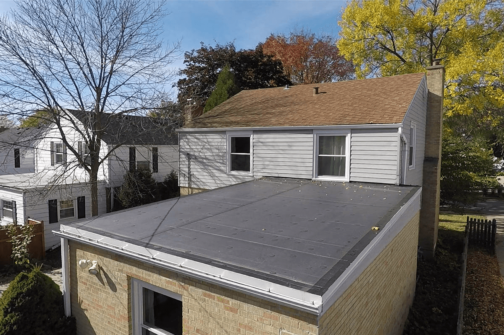

EPDM rubber roofing is the right solution for flat and very low-slope roof sections on Vermont homes — additions, sunrooms, garage roofs, and rear extensions where a pitched shingle or metal roof isn't feasible. EPDM handles Vermont's thermal movement well because the rubber membrane stays flexible at low temperatures. It doesn't crack or become brittle through freeze-thaw cycling the way some other flat roof materials do.
We install fully adhered EPDM with proper edge termination and flashing integration at every wall and penetration. Done right, it's a 20 to 30-year roof that's fully repairable if damaged.
Why EPDM for Vermont Flat Roofs
- Handles freeze-thaw cycling — EPDM remains flexible at low temperatures and expands and contracts without cracking or delaminating
- 20 to 30-year lifespan — with proper installation and drainage maintenance
- Fully repairable — punctures, tears, and seam failures can all be repaired without replacing the full membrane
- Cost-effective — the most economical flat roof system for residential applications
- Long track record — EPDM has been the standard for residential flat roofing in northern climates for decades

What We Install
- Fully adhered EPDM membrane — bonded directly to the substrate with bonding adhesive for maximum wind uplift resistance. Not ballasted, not mechanically fastened.
- 60 mil membrane — heavier than the 45 mil standard, more durable in foot traffic areas and hail events
- Seam tape at all overlaps — factory-applied seam tape with lap sealant at edges
- Proper edge termination — drip edge, termination bar, and sealant at all perimeter conditions
- Flashing integration at all walls, curbs, and penetrations — the most common failure point on flat roofs
- Drainage assessment before every job — ponding water is the primary enemy of any flat roof system
EPDM vs TPO
The other common option for low-slope residential work is TPO (thermoplastic polyolefin). Both perform well in Vermont's climate. EPDM has a longer track record in cold-weather applications and is generally easier to repair. TPO is heat-welded at seams rather than adhesive-bonded, which some installers prefer for seam strength. We'll recommend the right system based on your specific slope, substrate, and drainage conditions — not a preference for one product over another.
EPDM Rubber Roofing — FAQ
A properly installed EPDM membrane typically lasts 20 to 30 years in Vermont's climate. EPDM handles freeze-thaw cycling well because the rubber membrane remains flexible at low temperatures. The main factors affecting lifespan are installation quality — particularly seam and termination details — proper drainage, and maintenance. Ponding water is the primary enemy of any flat roof system.
For residential flat and low-slope applications — additions, sunrooms, garage roofs, and rear extensions — EPDM is typically the right choice. It's cost-effective, handles Vermont thermal movement well, is fully repairable if damaged, and has a long track record in northern climates. We'll confirm the right system after seeing the specific slope, drainage, and substrate conditions.
A fully adhered installation bonds the membrane directly to the substrate with bonding adhesive. For residential applications we always use fully adhered — it provides better wind uplift resistance and eliminates the weight of ballast. Every installation includes proper edge termination at perimeter and penetrations, seam tape at all overlaps, and flashing integration at walls and curbs.
Yes — EPDM is one of the most repairable flat roofing membranes available. Small punctures and tears can be patched with EPDM-compatible lap sealant and membrane patches. Seam failures can be re-adhered. This repairability is one of EPDM's key advantages over some alternative systems. If you have an existing EPDM roof that's leaking, we can assess whether repair or full replacement is the right call.
Both are single-ply membranes for low-slope roofs and both perform well in Vermont. EPDM is rubber-based and seamed with adhesive and tape — it has a longer track record in cold-weather applications and is generally easier to repair. TPO is a thermoplastic membrane seamed with heat welding, which creates a very strong seam bond. We'll recommend the right system based on your specific conditions rather than a preference for one product.